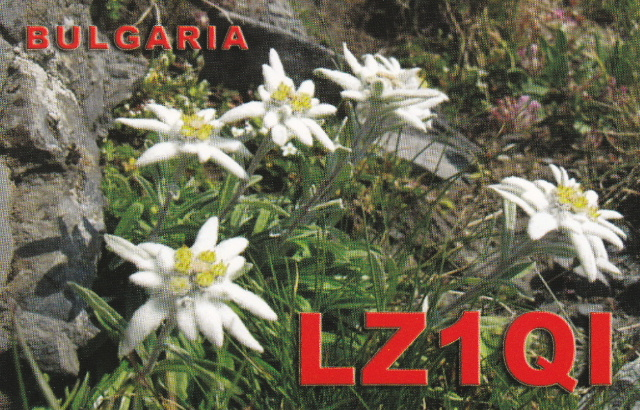
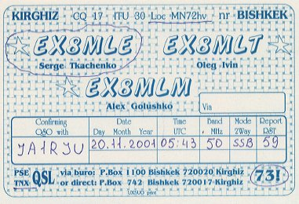

Flash ! DX


|
|
|
|
|
|
|
[Back Issues Jun.2013]
TIME:UTC(JST-09:00)
Report from JA1RJU(PM95sq)
30.Jun.2013(15:00b)
6M6M 23:15 50.092 CW CQ NA
---------------------------------------------------------
Report from JA1RJU(PM95sq)
29.Jun.2013(15:00d)
BA4SI 07:20 50.081 CW CQ
HL2ZBD/3 07:33 50.140 CW CQ
HL2/KA8U 07:38 50.151 SSB QSL to JF1KQQ
4X4DK 07:40 50.106 CW weak
4X4DK 08:20 50.085 CW CQ
Report from JA1RJU(PM95sq)
28.Jun.2013(15:00b)
Report from JA1RJU(PM95sq)
27.Jun.2013(15:00d)
BV2DQ 00:41 50.085 CW CQ NA
6M6M 00:47 50.097 CW CQ NA (Korea)
6M6M 07:46 50.097 CW @ RST599
9M2/JG3TTO 08:03 50.105 CW
BA7IO 08:29 50.102 CW CQ CQ
(JA6YBR/b 09:00- 50.017 CW Beacon
(JR6YAG/b 09:00- 50.037 CW Beacon Okinawa)
Report from JA1RJU(PM95sq)
26.Jun.2013(15:00d)
K0GU 01:50 50.082 CW
K0GU 02:37 50.049 CW
HL1LUA/B 05:43- 50.066 CW Beacon(PM37MO) RST599
6K2EJJ/B 05:43- 50.057 CW Beacon(PM37OP) RST599
BA4SI 08:55 50.086 CW CQ RST599
9M6XRO 09:00 50.110 CW
Report from JA1RJU(PM95sq)
25.Jun.2013(15:00c)
KH7Y 22:30 50.105 CW CQ
----------------------------------------------------------
DU1EV/B 01:15- 50.008 CW Beacon
HL1LUA/B 05:15- 50.066 CW Beacon(PM37MO) RST599
6K2EJJ/B 05:25- 50.057 CW Beacon(PM37OP) RST599
Report from JA1RJU(PM95sq)
24.Jun.2013(15:00d)
BA4SI 23:00 50.081 CW CQ NA
(JA6YBR/b 03:00- 50.017 CW Beacon RST599)
BG6CJR 05:16 50.097 CW CQ
BA8AT 05:17 50.104 CW CQ RST599
BA8AG 05:22 50.086 CW
HL4CYP 06:57 50.086 CW QSO with BA8AG
BA8AG 07:00 50.086 CW CQ CQ RST599
VR2UW 07:00 50.099 CW
BD8ASG 07:24 50.107 CW RST599
BA8AG 07:35 50.086 CW CQ CQ
BY8AC 08:00 50.101 CW CQ RST599
BA4SI 08:08 50.0815 CW CQ EU
Report from JA1RJU(PM95sq)
23.Jun.2013(15:00c)
KH6SX 22:00 50.110 CW
NA6XX 22:24 50.085 CW
------------------------------------------------------
UY1HY 04:44 50.099 CW weak
HL5BMX 06:39 50.104 CW
(YO4AUL 06:50 50.085 CW JA6)
6M6M 06:57 50.097 CW Korea RST599
Report from JA1RJU(PM95sq)
22.Jun.2013(15:00b)
Report from JA1RJU(PM95sq)
21.Jun.2013(15:00d)
KL7HBK 22:43 50.095 CW CQ
KL7KY 23:54 50.101 CW @ UP1-2 RST599/599
------------------------------------------------------
KL7KY 00:04 50.101 CW UP still good!
BV2DQ 00:23 50.085 CW CQ NA
Report from JA1RJU(PM95sq)
20.Jun.2013(15:00d)
BA4SI 23:13 50.081 CW CQ
DS3BNU/2 23:46 50.096 CW CQ
------------------------------------------------------
HA5JI 05:19 50.096 CW CQ
9A8A 07:30 50.0815 CW
S59A 07:38 50.081 CW CQ CQ
PF7M 07:43 50.082 CW
S59A 08:00 50.081 CW CQ
IK5ACO 08:15 50.092 CW CQ QRS
IZ5EKV 08:25 50.0866 CW CQ
DK3EE 08:45 50.0825 CW
(KL7HBK 08:52 50.095 CW JA7.8)
(ON4GG 09:00 50.085 CW )
Report from JA1RJU(PM95sq)
19.Jun.2013(15:00c)
KA9CFD 22:20 50.1009 CW
------------------------------------------------------
BA4SI 07:28 50.091 CW CQ
HL1ZAU 07:30 50.091 CW CQ
HL1LUA 07:33 50.087 CW CQ
CT1HZE 07:45 50.079 CW
OZ1DJJ 07:52 50.081 CW CQ
EA7KW 08:02 50.084 CW
OZ1DJJ 08:09 50.081 CW @ RST569/599 QSB
LZ1QI 08:14 50.087 CW
HL1ZAU 08:16 50.104 CW CQ
LZ1QI 08:21 50.087 CW CQ
HL4CHH 08:23 50.088 CW CQ
DU1WGA 08:40 50.099 CW RST599
Report from JA1RJU(PM95sq)
18.Jun.2013(15:00d)
YO4AUL 04:48 50.0873 CW CQ
UN3GX 05:04 50.091 CW @
UT7QF 05:13 50.102 CW @ RST579/599
UN3GX 05:20 50.087/102 CW CQ
HA8CE 05:30 50.101 CW
HL1LUA/B 05:44- 50.066 CW Beacon?
UT7QF 05:50 50.102 CW CQ
9H1XT 05:59 50.107 CW @ CQ
UK9AA 05:15 50.105 CW
UK9AA 05:32 50.105 CW @ UP2 RST599/599
EA7KW 07:50 50.088 CW
CT1EXY 07:46 50.0856 CW
UY1HY 08:25 50.0916 CW CQ
(CT1HZE 09:15 50.084 CW JA3)
SV1DH 09:19 50.085 CW CQ
SV1DH 09:40 50.085 CW CQ CQ
SV1JGX 09:43 50.100 CW
SV1DH 09:48 50.085 CW CQ CQ CQ!
Report from JA1RJU(PM95sq)
17.Jun.2013(15:00c)
4X4DK 06:23 50.091 CW
BA4SI 07:15 50.087 CW RST599 QSO with Many EU's !
Report from JA1RJU(PM95sq)
16.Jun.2013(15:00d)
BA8AG 05:30 50.101 CW CQ
4Z1UF 05:43 50.0995 CW
BV2A/1 06:14 50.115 CW
BA8AG 06:15 50.101 CW
Report from JA1RJU(PM95sq)
15.Jun.2013(15:00c)
K0GU 22:30 50.085 CW
K0BJ 23:19 50.081 CW
W5KI 23:25 50.087 CW
AA7XT 23:46 50.093 CW
W5KI 23:51 50.087 CW
K0GU 23:57 50.085 CW
------------------------------------------------------
K0GU 00:00 50.085 CW
K0JY 00:04 50.091 CW
K4PI 00:07 50.097 CW
NW0W 00:12 50.106 CW
K6EID 00:13 50.095 CW
VY0HL 00:19 50.091 CW QTH Zone-2 (GL=FP53RS)
VY0HL 00:44 50.092 CW IQALUIT, NU X0A 0H0 Canada
Report from JA1RJU(PM95sq)
14.Jun.2013(15:00e)
DS3BNU/2 00:50 50.110 SSB CQ CQ RS59
BA8AG 07:13 50.101 CW CQ
BA8AT 07:53 50.104 CW CQ RST599
BD8ASG 07:54 50.107 CW CQ RST599
HL5BMX 08:05 50.098 CW CQ weak
KH2/N2NL 08:46 50.105 CW
VU2RBI 09:59 50.102 CW
BX2AB 10:00 50.105 CW
Report from JA1RJU(PM95sq)
13.Jun.2013(15:00d)
HA8CE 05:08 50.084 CW @ RST569/559
IK0FTA 05:37 50.0895 CW CQ CQ
S59A 05:49 50.0815 CW CQ
HA8CE 06:19 50.084 CW CQ
9H1BT 06:46 50.087 CW FB!
EX8MLE 06:51 50.104 CW CQ FB!
EX8MLE 06:58 50.104 CW @ RST599/599
4Z1UF 07:30 50.097 CW CQ JA
UT4UO 07:48 50.081 CW weak
4Z1UF 07:50 50.097 CW CQ JA
LZ1QI 08:22 50.077 CW @ RST599 QSB
LZ2WO 08:40 50.0856 CW CQ weak
LZ1QI 08:55 50.077 CW CQ CQ




Report from JA1RJU(PM95sq)
12.Jun.2013(15:00c)
KH9/WA2YUN/B 02:05- 50.014 CW Beacon RST599
V73SIX/B 02:10- 50.0136 CW Beacon RST599 GL=RJ39
Report from JA1RJU(PM95sq)
11.Jun.2013(15:00d)
DS3BNU/2 01:20 50.110/130 SSB CQ
DS3BNU/2 01:29 50.110 SSB @ RS59
HL1LUA 01:44 50.104 CW CQ CQ
4Z1UF 06:50 50.098 CW CQ
4Z1UF 08:00 50.098 CW still in CQ
4Z1UF 08:28 50.098 CW @ UP1 RST589/599 QSB

Report from JA1RJU(PM95sq)
10.Jun.2013(15:00d)
BX2AB 00:19 50.110 CW CQ
(JR6YAG/b 02:00- 50.037 CW Beacon Okinawa)
DU1EV/B 02:00- 50.008 CW Beacon
HL5FKP 03:40 50.160 SSB
Report from JA1RJU(PM95sq)
09.Jun.2013(15:00b)
FEDXP/総会 (大阪・茨木)
Report from JA1RJU(PM95sq)
08.Jun.2013(15:00b)
FEDXP/総会（大阪・茨木）
Report from JA1RJU(PM95sq)
07.Jun.2013(15:00b)
Report from JA1RJU(PM95sq)
06.Jun.2013(15:00b)
Report from JA1RJU(PM95sq)
05.Jun.2013(15:00b)
Report from JA1RJU(PM95sq)
04.Jun.2013(15:00b)
Report from JA1RJU(PM95sq)
03.Jun.2013(15:00b)
Report from JA1RJU(PM95sq)
02.Jun.2013(15:00d)
N5DG 23:24 50.0831 CW
K5RK 23:38 50.0865 CW
N5DG 23:40 50.0831 CW UP1
-------------------------------------------------------
WD5K 00:15 50.081 CW
BA4SI 00:19 50.091 CW CQ
K5VWW 00:30 50.081 CW
BA4SI 00:48 50.091 CW CQ
HL1IBG 06:05 50.099 CW CQ
(S59P 06:27 50.098 CW JA7)
(S57TW 06:50 50.085 CW JA1.7)
S59P 07:25 50.081 CW weak into PM95
(HA8FK 07:30 50.090 CW JA4)
(YO9HP 07:30 50.097 CW JA7)
(HA0DU 07:39 50.085 CW JA7)
(OE4VIE 07:47 50.076 CW JA7)
Report from JA1RJU(PM95sq)
01.Jun.2013(16:00d)
(JR6YAG/b 03:00- 50.037 CW Beacon Okinawa)
BD3MH 08:37 50.106 CW @ RST599
HL1IBG 08:44 50.099 CW CQ
BY8AC 14:59 50.105 CW CQ CQ
BA8AT 15:06 50.108 CW @ RST579